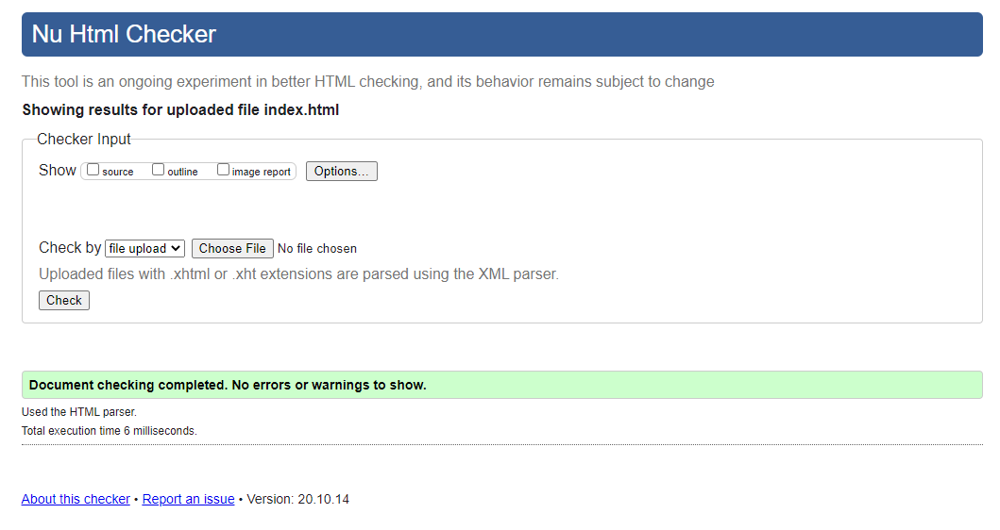
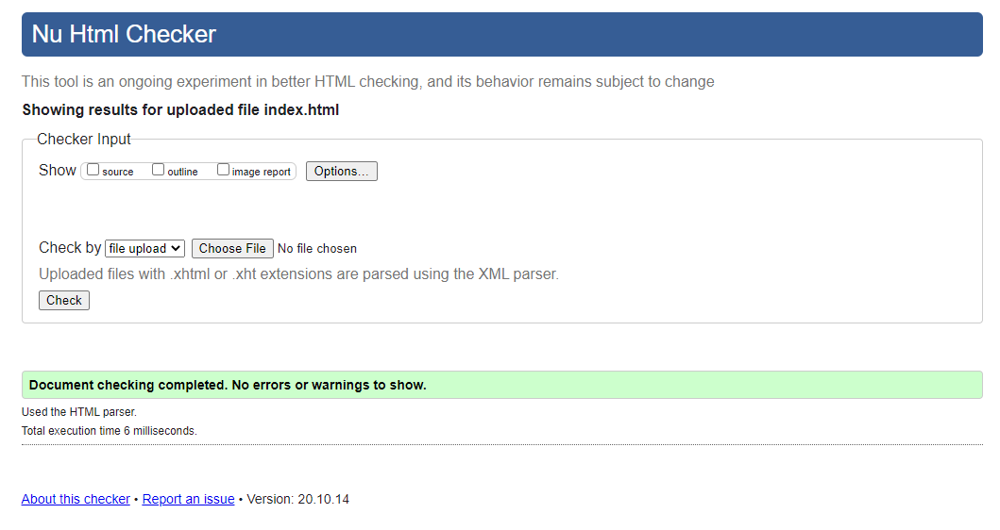

My name is Cole Diamante. I'm a 17 year old guy who enjoys all things video games. I started playing videos games when I was around 5 on the Playstation 2. Since then my passion for video games has only grown stronger. I've decided I wanted to get into Video Game Design, because video games is one of the few things that I've been passionate about all my life.
I was born on May 21st 2003 in Rhode Island, and still live there. I enjoy fishing, swimming, playing video games, and building computers. I've had many pets over the years, but my only current pet is my dog, Coco who is a Bichon-Poodle mix. Once I have a goal in mind, I try my very best to achieve it.
 
